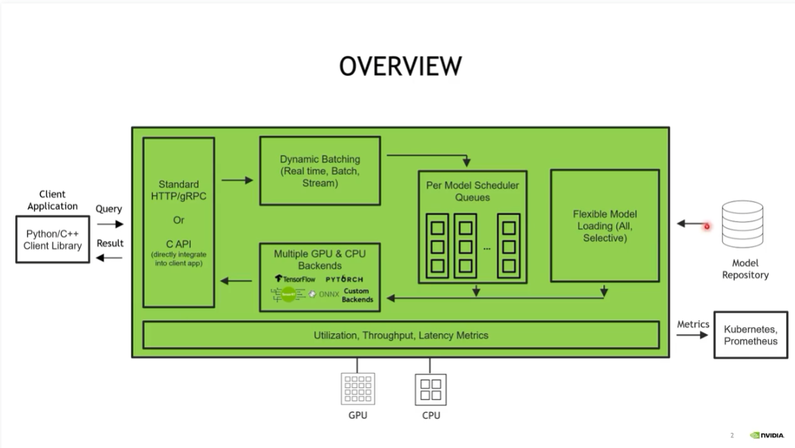
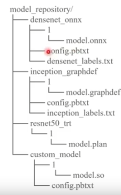
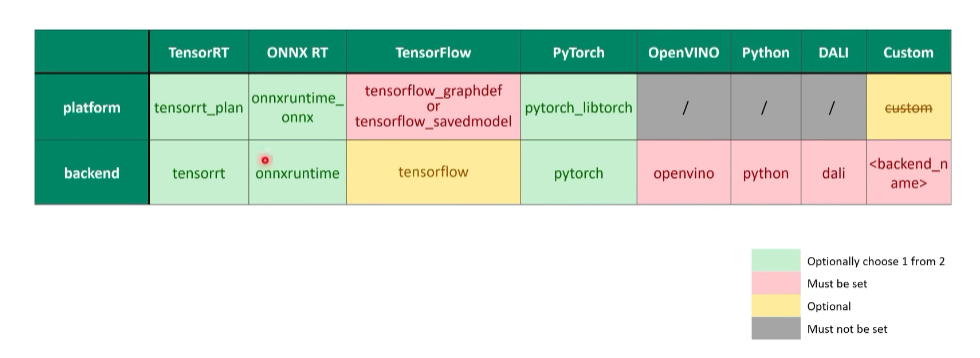
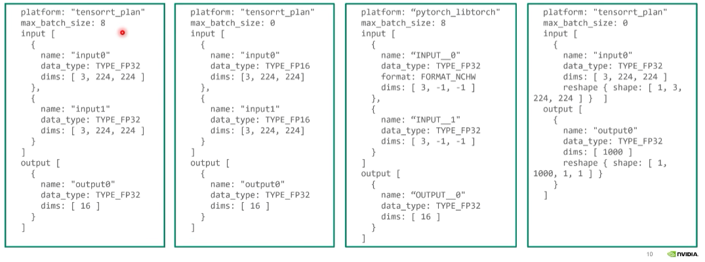
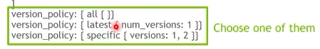
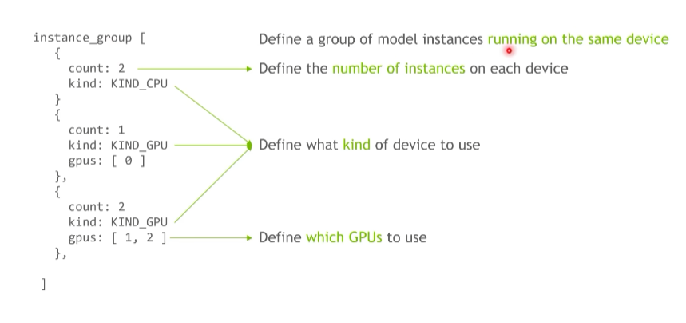
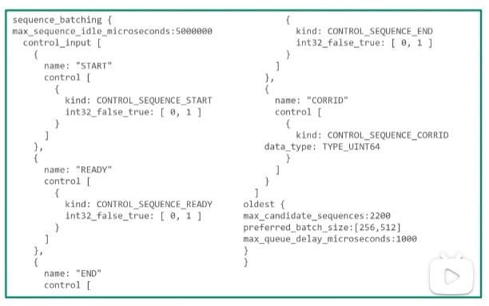
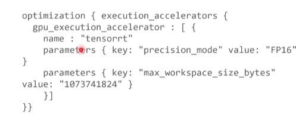
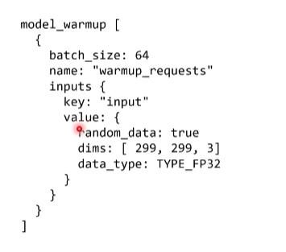

Triton入门级教程¶
Triton Inference Server整体架构：

1、准备模型仓库¶
具体到某一个推理的模型目录，模型仓库具有三级结构：
版本目录 -> 模型文件
config文件
label files

1.1 模型文件¶
模型文件是模型目录重要的组成部分，以下列出不同格式模型下模型文件的命名规则：
TensorRT: model.plan
ONNX: model.onnx
TorchScriptss: model.pt
TensorFlow: model.graphdef, or model.savemodel /
Python: model.py
DALI: model.dali
OpenVINO: model.xml and model.bin
Custom: model.so
通过版本号找到正确版本的模型
1.2 配置文件¶
定义模型和服务器的配置参数
1.3 标签文件¶
对于分类模型，label file 自动产生类别名的预测概率，方便我们读取分类模型的输出
2、配置一个服务模型¶
2.1 配置文件信息¶
config.pbtxt文件中必须包含的信息
指定模型跑在哪个backend上面：通过 platform / backend 指定
max_batch_size：定义了模型最大能够执行的推理的batch是多少，用于限制模型推理不超过GPU的显存
输入和输出：Tensor
在TensorRT, TensorFlow saved-model, ONNX models中config文件不是必须的，默认配置 –strict-model-config=false 表示在这些模型下可以不指定 config 文件

绿色的二者选其一，红色是必须指定。
max_batch_size & input & output：（-1代表可变长度），max_batch_size=0表示模型的dims必须是真实的dims。

2.2 版本¶
三个策略指定版本的信息：

2.3 实例组¶
同时跑多个Instance提高GPU利用率

2.4 调度策略¶
Default Scheduler：
no batching
发送请求是多少就是多少batch_size
Dynamic Batcher：最重要提升吞吐性能，提升GPU利用率
preferred_batch_size：期望达到的batch_size
max_queue_delay_microseconds: 100：打batch的时间限制，越大表示愿意等待更多的请求
使用Dynamic Batcher之后客户端将比较小的请求合并成比较大的请求，可以极大提升模型的吞吐。
Sequence Batcher：

**Ensemble Scheduler：**组合成pipeline
2.5 优化¶
针对ONNX模型，可以直接开启TensorRT加速，TRT backend for ONNX

2.6 Warmup¶
热身的过程使模型推理稳定，热身完之后模型被加载进来并提供服务，但是模型加载比较漫长

3、启动 Triton Server¶
tritonserver –help：查看tritonserver所有的options
检查Server健康状态：curl -v <Server IP>:8000/v2/health/ready
3.1 常用选项¶
–log-verbose <integer>
–strict-model-config <boolean>
–strict-readiness <boolean>：检查健康状态什么情况下显示ready
–exit-on-error <boolean>：如果为true，所有模型必须load成功，否则模型开启不起来
–http(grpc, metrics)-port <integer>：使用端口
–model-control-mode <string>：以什么模式管理模型库，Options包含”none”, “poll”（动态更新）, “explicit”（在server启动初期是不加载模型的） –load-model resnet_50.onnx，在初期加载模型。curl -X POST http://localhost:8000/v2/repository/models/resnet50_pytorch/load (load换成unload就是卸载模型)
–pinned-memory-pool-byte-size <integer>：模型推理有效提高CPU/GPU数据传输效率，256M
–cuda-memory-pool-byte-size <integer>：可以访问的CUDA memory的大小，64M
–backend-directory：找backend编译的动态库
–repoagnet-directory：用于预处理模型库的程序（加密）
4、配置 Ensemble 模型¶
子模块需要准备好，放在model_repository里面，创建ensemble model，在语音识别模型中对应着attention_rescoring
name: "attention_rescoring"
platform: "ensemble"
max_batch_size: 64 #MAX_BATCH
input [
{
name: "WAV"
data_type: TYPE_FP32
dims: [-1]
},
{
name: "WAV_LENS"
data_type: TYPE_INT32
dims: [1]
}
]
output [
{
name: "TRANSCRIPTS"
data_type: TYPE_STRING
dims: [1]
}
]
定义模块之间的连接关系
key：input_tensor和output_tensor在模型文件本身定义的名字
value：input_tensor和output_tensor在ensemble模型里面定义的名字，用于连接不同的step
可以服务于Stateful model，不是实际的模型，只是一种调度策略，每一个子模块有各自的调度器，模块之间的数据传输通过CPU memory。每一个子模型model instance是解耦的。
Feature extractor模块
ensemble_scheduling {
step [
{
model_name: "feature_extractor"
model_version: -1
input_map {
key: "wav"
value: "WAV"
}
input_map {
key: "wav_lens"
value: "WAV_LENS"
}
output_map {
key: "speech"
value: "SPEECH"
}
output_map {
key: "speech_lengths"
value: "SPEECH_LENGTHS"
}
},
Encoder模块
{
model_name: "encoder"
model_version: -1
input_map {
key: "speech"
value: "SPEECH"
}
input_map {
key: "speech_lengths"
value: "SPEECH_LENGTHS"
}
output_map {
key: "encoder_out"
value: "encoder_out"
}
output_map {
key: "encoder_out_lens"
value: "encoder_out_lens"
}
output_map {
key: "beam_log_probs"
value: "beam_log_probs"
}
output_map {
key: "beam_log_probs_idx"
value: "beam_log_probs_idx"
}
},
scoring模块
{
model_name: "scoring"
model_version: -1
input_map {
key: "encoder_out"
value: "encoder_out"
}
input_map {
key: "encoder_out_lens"
value: "encoder_out_lens"
}
input_map {
key: "batch_log_probs"
value: "beam_log_probs"
}
input_map {
key: "batch_log_probs_idx"
value: "beam_log_probs_idx"
}
output_map {
key: "OUTPUT0"
value: "TRANSCRIPTS"
}
}
5、发送请求¶
import tritonclient.grpc as grpcclient
创建client对象：grpcclient.
获取config数据：tritonclient.get_model_metadata
准备输入原始数据
打包到request里面，准备好inputs对象和outputs对象
发送请求执行推理：异步、同步、streaming
当在同一台机器部署server client时，使用shared memory模块，python_backend使用shared memory传输数据。